互惠动态
|
|
今生绝对不能与他们擦肩而过的15个小地方
提示：点击上方"ASC"↑免费订阅本刊
世人所说的瑞士，究竟在哪里；世人所问的瑞士之美，究竟在哪里？
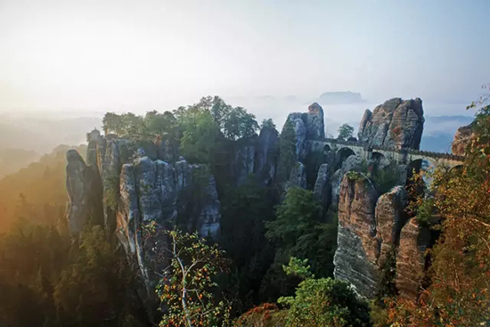
萨克森瑞士是德国东部的一片山区，尽管德国和瑞士接壤，但是并不影响德国人对瑞士风景的赞许和歌颂，所以这块拥有欧洲独一无二的白垩砂岩景观的山区，就被他们亲切的称作小瑞士了。在这里，人们可以在有精神山谷中徒步，用心该收森林和岩石所勾绘出来的自然之美。
澳洲
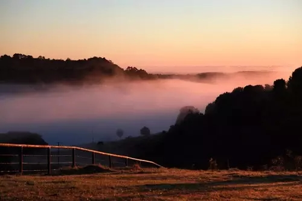
在地球的另一端，也有一个地方有着小瑞士的称号。Montville就在布里斯班的附近，因为小镇独特的瑞士风情，所以小瑞士的这个名字也就一直流传下来了。这里有着小镇自己的草莓园，酒庄，还能登高远眺整个山脉的风景。然后散散步，喝喝茶，悠闲的瑞士式生活也就不期而遇了。
西藏的林芝有着西藏小瑞士的称号。在这里，每到春天，遍地的桃花盛开。仿佛这里更加超越了拉萨的美，而变成了一座完美的世外桃源。远处雪山的映衬和巴松错湖水的倒影构建成了一副中国独有的瑞士风景。这里也是行走德国的最爱。
非洲小瑞士斯威士兰可不是因为他的景色而被人们成为非洲小瑞士。其实很多人都会把他们国家的名字（Swaziland）和瑞士（Switzerland）搞混呢。不过不要以为被忽悠了，斯威士兰这个小小国家可是有着其无法比拟的自然景观和人文特色呢。比如，它是世界上国民平均寿命最短的国家呢（汗一个）。
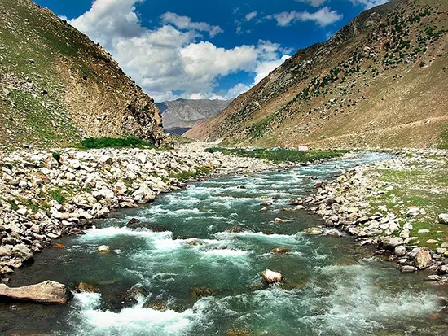
来到巴基斯坦的Naran，便来到了美丽的高山地区。那里让人联想到瑞士，牛群在田地里吃草。向远处望去山脉绵延无尽。河流川流不息的声音让人们把心留在了这里。会不会看到这样美丽的景色，就对巴基斯坦这个既陌生又熟悉的国家产生兴趣了呢？
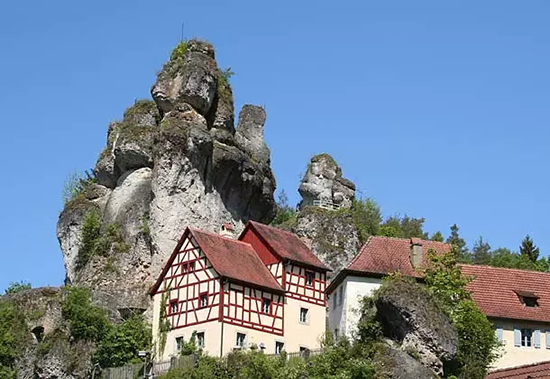
德国人有时候会觉得瑞士想一个大农村，可是他们偏偏又不能割舍对乡村情节的热爱，就像弗兰肯地区一样。这片巴伐利亚州北部地区不仅有着悠久的历史，更因为它的自然景观饱受世人的赞美，也被许多游客誉为德国的“微缩景观”。也许小和精致便是世人对于瑞士的另外一种高尚的赞美吧！
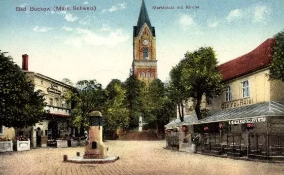
又是德国，不过这次是在东北部的勃兰登堡州。Buckow（Maerkische Schweiz）被人们亲切的成为勃兰登堡州的小瑞士。这里能找到瑞士风情的山和水，春天的气息在这里总是让人心动。曾经从东德体制下走出来的小镇，却散发着一股浪漫之情，也许这种情怀是任何事情也改变不了的吧。
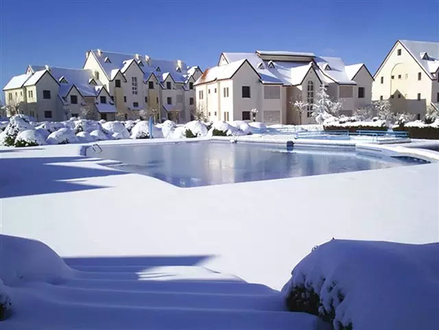
和斯威士兰不同，摩洛哥的Ifrane可的确是以他美丽的自然风情和景观著称的。伊夫兰的欧洲风情和白雪皑皑的景色以及滑雪项目让它获得了非洲“小瑞士”的称号，让人不禁眼前一亮，原来非洲也会有白雪皑皑的景象的哦。与北非给人留下的干燥炎热的印象不同，伊夫兰小镇内却到处洋溢着勃勃生机。雪松、橡树林、牧草地，这些看似不可能的元素出现在这里实在是大自然的馈赠。
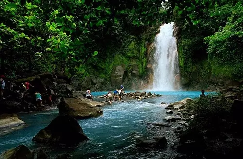
加勒比海和墨西哥湾中的哥斯达黎加，不仅是中美洲的一颗明珠，也被人们亲切的称作美国后花园的小瑞士。三毛在她的游记中提到过，哥斯达黎加被称为中美洲的小瑞士，这里多山水、风景优美、欧式建筑颇多。不仅仅是这样，有些瑞士人真的被这里的乡情所吸引，最后真正的定居在这里了。
博卡拉举世闻名，得益于她的费娃湖、鱼尾峰和安娜普尔纳山脉。这个“南亚小瑞士”湖光山色绝佳，气候也很宜人，消费也比较低，是很受世人喜爱的休闲旅游胜地。清晨，伴随着牛铃声，和轻轻的风声，醒来了，却以为自己真的深入在阿尔卑斯山脉的那种浪漫情怀中。
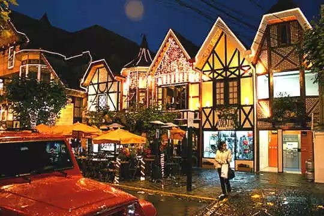
巴西有一个传说中的小瑞士，这里是一座山城，有着瑞士一般的建筑风格。对于完全没有四季的巴西来讲，小瑞士算得上四季分明了，有春夏，也有秋冬。每年最冷的时节，山顶还会出现积雪。而这里是很多巴西上流社会的人们度假的首选之地。
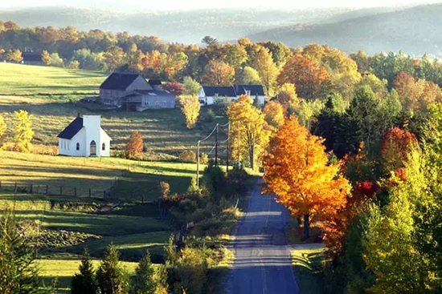
Eastern Township位于美加边境加国一侧，简称 Estrie，法语里又称 Cantons-de-l'Est，距离蒙特利尔不过一小时左右车程。整个Estrie地区拥有众多的山川、湖泊以及漂亮而别致的小镇，这里素有魁北克的小法国、小瑞士之称，可谓风光如画，来到这一地区不觉中有时甚至会有身在法国的错觉。这里一年四季都有各种不同的活动，春季踏青、枫糖屋，秋天赏枫、摘果、冬季滑雪、冰钓，而夏季里各种水上运动和陆地活动就更是不胜枚举。
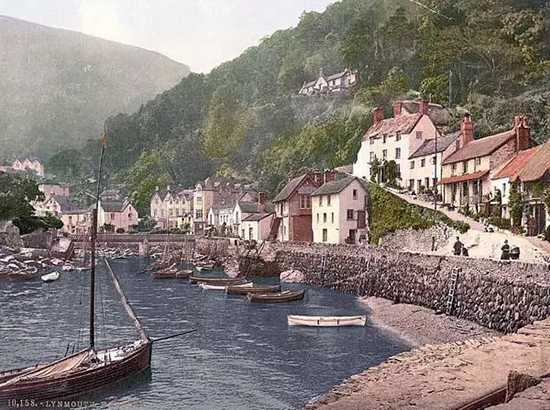
在英国北部的海边，有两个相邻的小镇，在山上的名叫Lynton；至于在山下，在Lyn河河口的，自然就叫作Lynmouth。这两个小镇又有英国的小瑞士之称，顾名思义是一个背靠壮丽山岭（Exmoor国家公园），小屋依山而建而堆砌成的风景区。唯一的区别便是就在旁边蔚蓝的大海。春夏交替之时更是漂亮，潺潺溪水，鲜艳花草，蜂飞蝶舞，茅屋房舍，一切恬美自然宁静。
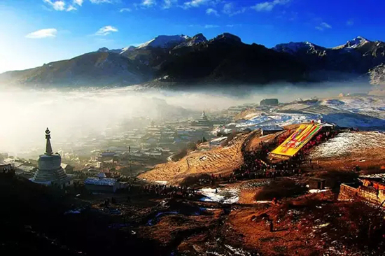
有人说，知道了郎木寺，从此爱上了藏区。郎木寺位于川甘边界的这个宗教圣地，有着罕见的喇嘛寺院，隔江而据的清真寺，正在做礼拜的回族兄弟和晒大佛的藏族同胞。在西方人眼中这里是一个名副其实的“小瑞士”。
也许，在世人的眼中，瑞士并不真正代表了某一个地区，而是一种含义，一种对于自然和谐之美的赞誉之词。真正的瑞士，不在远方的欧洲，不在白雪皑皑的阿尔卑斯脚下，更不在冥冥的幻想中，真正的瑞士，只存在于每个人的心底。